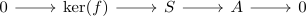

simple object and quotients in an abelian category
Proposition
Let $\mathcal{A}$ be an abelian category and $S$ a simple object. Then the only quotient object of $S$ are $S$ and $0$.
Proof
Let $f:S \twoheadrightarrow A$ be an epimorphism where $f$ is neither the zero morphism nor an isomorphism Then we get an exact sequence

where $\mathrm{ker}(f) \neq 0$ as otherwise $f$ would be both epi and mono. Furthermore $\mathrm{ker}(f) \simeq S$ would imply that $f$ is an isomorphism, contradiction to our assumption.
But then $\mathrm{ker}(f)$ would be a nontrivial subobject, contradiction to $S$ simple.